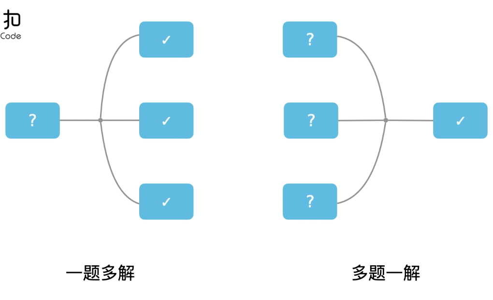

目录（benboerdong）
介绍
Java基础
Javabase整理
Java基础
java中二进制操作符号
反射
IO流
Java-web基础
Java版本特性
容器
List
ArrayList
LinkedList
Map
HashMap
CurconnectHashMap
Set
HashSet
并发
并发编程整理
锁相关整理
JVM（重点）
JVM整理
设计模式
数据库
mysql
MySQL整理
redis整理
网络编程
三次握手与四次挥手
常考
操作系统
数据结构
链表
算法
个人总结常见算法题整理
labuladong的算法小抄
排序
十大排序算法之-快速排序
十大排序算法之-归并排序
leetCode
myself
并发编程
分库分表
锁相关
微服务
问题排查
转账业务
个面总结
ArrayList
concurrentHashMap
mysql索引
springboot笔记
springboot
spring容器启动流程
spring
springmvc
springCloud
ssm
synchronized
ThreadLocal
javabase整理
java框架
spring整理
SpringBoot
Springcloud
mybatis
springmvc
netty
dubbo整理
hibernate
rabbitmq整理
zookeeper整理
技术
认证授权
SSO（单点登录）
分布式
CAP 理论
BASE 理论
Paxos 算法和 Raft 算法
搜索引擎
RPC
API 网关
分布式 id
分布式事务
分布式锁实现业务幂等
微服务
高并发
消息队列
读写分离
分库分表
负载均衡
高可用
限流
降级
熔断
排队
架构
消息队列
linux
工具
Git
将本地项目同步到GitHub上
Git与SVN的区别
gitbook
Gitbook创建一本书
将Gitbook书上传到GitHubPages
Typora使用
个人言语
优秀的公众号及网站
待学习知识
为每个章节都能有目录而做
分布式
cap
分布式课程
分布式事务
分布式锁
分布式锁实现业务幂等
RPC
dubbo
本书使用 GitBook 发布
leetCode
LeetCode
力扣官网
算法题刷题
首刷算法：
由易到难，同类问题一起刷
常见问题多做几遍
多练、多想、多总结
先暴力、再优化
数组、链表、字符串、数学、栈、hash表、图、树、
排序、==动态规划==、贪心、递归、二分、双指针、深度优先、广度优先、滑动窗口、回溯、

results matching "
"
No results matching "
"